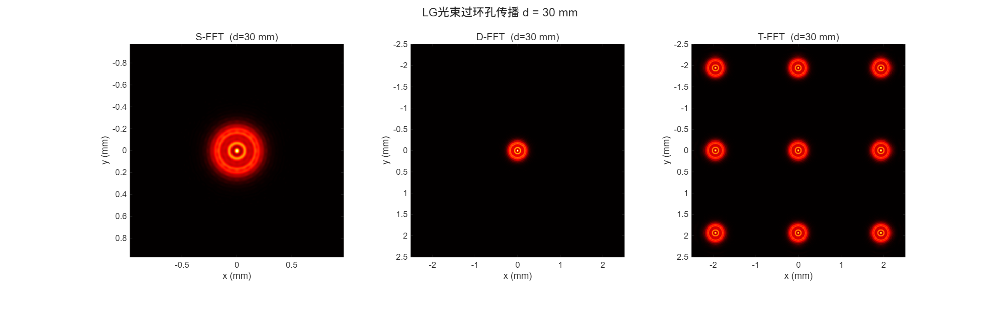
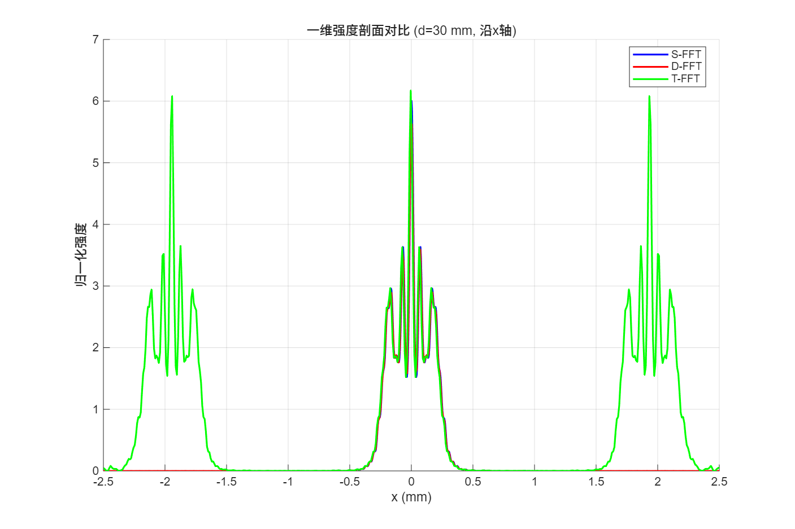
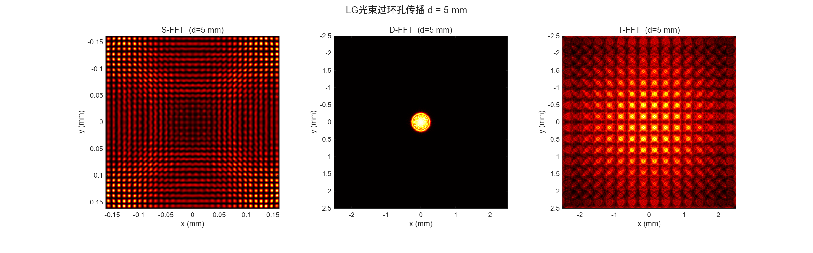
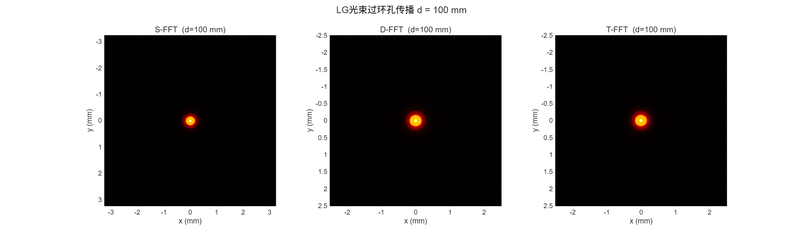

一句话：菲涅尔衍射积分可以写成卷积，也可以写成传递函数，还可以写成角谱——三种形式对应三种 FFT 实现。
标量衍射在近轴近似下，光场从 (x₀,y₀) 传播距离 z 后的复振幅为： U(x,y) = (e^{ikz}/iλz) ∬ U₀·exp[ik((x−x₀)²+(y−y₀)²)/(2z)] dx₀dy₀。 这是一个卷积，可以用 FFT 加速。
S-FFT：直接对卷积核做 FFT（单次 FFT + 一次 IFFT）， 输出面尺寸 L_out = N·λ·d/L₀ 随距离线性增大，自然对应夫琅禾费标度。
T-FFT：在频域乘传递函数 H(fx,fy) = exp[ikz(1−λ²(fx²+fy²)/2)]， 输出面与输入面同尺寸，但远距离易混叠。
D-FFT：角谱法，传递函数模长为 1（幺正），用 max(arg,0) 滤除倏逝波， 中等距离下最精确。
输出随距离放大
输出与输入同尺寸
幺正，滤倏逝波
输出窗口、优缺点与适用场景。
| 方法 | 输出窗口 | 优点 | 注意 |
|---|---|---|---|
| S-FFT | L_out = N·λ·d/L₀ | 单次 FFT，自然夫琅禾费标度 | 像元随 d 变化，短距易混叠 |
| T-FFT | L_out = L₀ | 每步一次 IFFT，采样不变 | 远距易混叠 |
| D-FFT | L_out = L₀ | 幺正，中距最准，滤倏逝波 | 无夫琅禾费标度 |
| 仿真参数 | 取值 |
|---|---|
| 入射光 | LG(p=0,l=0) 高斯, λ=632.8nm, w=0.5mm |
| 孔径 | 圆孔外径 0.3 mm |
| 网格 | 512×512, L₀=5 mm |
| 传播距离 | d = 1 – 150 mm（20 个距离） |
三种算法在不同传播距离下的输出窗口与强度分布对比（三联图 + 一维剖面）。




统一接口下三种算法的实现要点。
通过 'Method','S-FFT'/'T-FFT'/'D-FFT' 选择算法，输入输出统一为 (U, x, y)， 三种方法共享同一套 LG 光束生成器与孔径掩膜。
E(r,θ,z;p,l) 包含径向关联拉盖尔多项式、螺旋相位 exp(ilθ)、 古伊相位与球面波前因子，可生成任意 p、l 阶涡旋光束。
show_results.m 并排渲染三算法结果，叠加一维 x/y 强度剖面， 共享 colorbar；GIF_generator.m 逐帧追加生成 1–150 mm 传播动画。
| 项目 | S-FFT | T-FFT | D-FFT |
|---|---|---|---|
| FFT 次数 | 1 次正 + 1 次逆 | 1 次正 + 1 次逆 | 1 次正 + 1 次逆 |
| 输出尺寸 | 随 d 线性增大 | 与输入相同 | 与输入相同 |
| 传递函数 | 空域卷积核 | H(f) 菲涅尔 | H(f) 角谱，幺正 |
| 适用距离 | 中远距离 | 近距离 | 中等距离最准 |
| 倏逝波 | 不处理 | 不处理 | max(arg,0) 滤除 |
MATLAB R2021b+，无需工具箱，一条命令。
% 主脚本：三联对比 + GIF 动画 main % 单独调用传播函数 [U, x, y] = propagate(U0, x0, y0, lambda, d, 'Method', 'D-FFT'); % 生成高阶 LG 光束演示 show_LG_beam
@book{goodman2005fourier,
title = {Introduction to Fourier Optics},
author = {Goodman, Joseph W.},
edition = {3rd},
publisher = {Roberts \& Company},
year = {2005}
}
@article{matsushima2009band,
title = {Band-limited angular spectrum method for numerical
simulation of free-space diffraction},
author = {Matsushima, Kyoji and Shimobaba, Tomoyoshi},
journal = {Applied Optics},
volume = {48},
number = {32},
pages = {6258--6266},
year = {2009}
}
本复现为独立实现，三种 FFT 衍射算法为经典计算光学方法， 基础理论见 Goodman《傅里叶光学》，带限角谱法见 Matsushima (2009)。 代码仅用于学术研究与学习交流，MIT License。